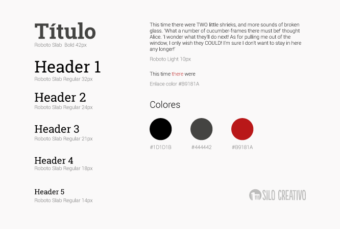

Las guías de estilo son la documentación, recogida en un manual de identidad corporativa, que describe los estándares gráficos para una marca.
Crear un documento que especifique la paleta de colores, la tipografía, los logos, las imágenes, los patrones, los lemas, etc., de una marca garantiza que la inversión en branding de la marca no se diluya.
